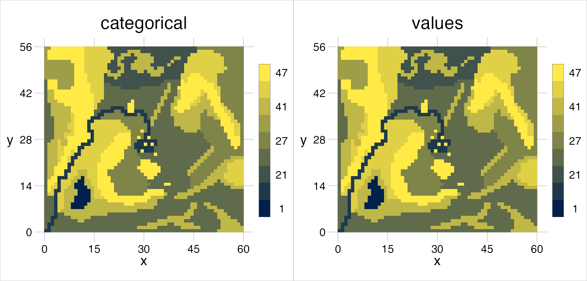
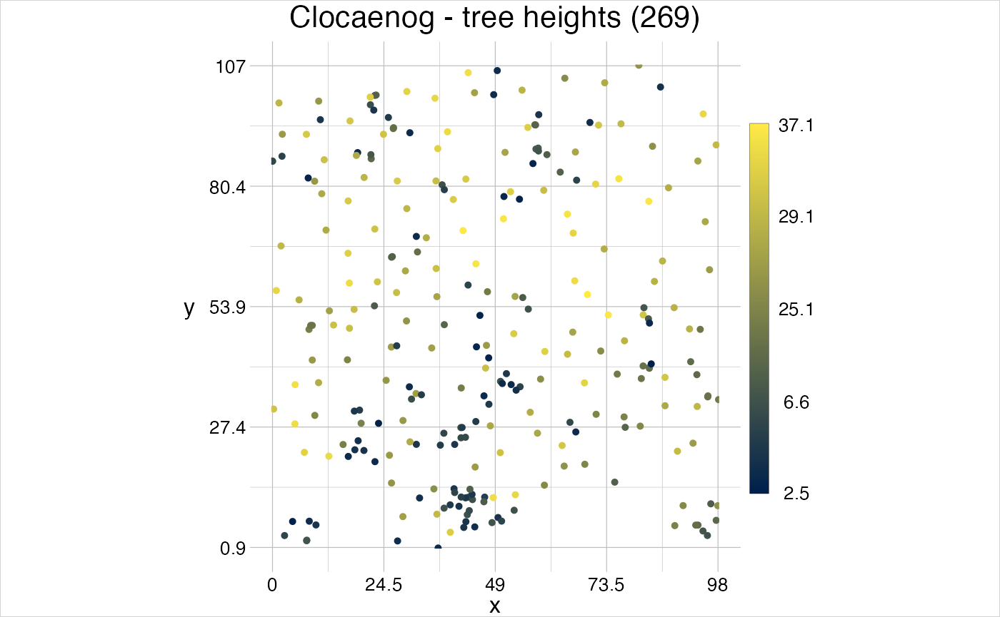
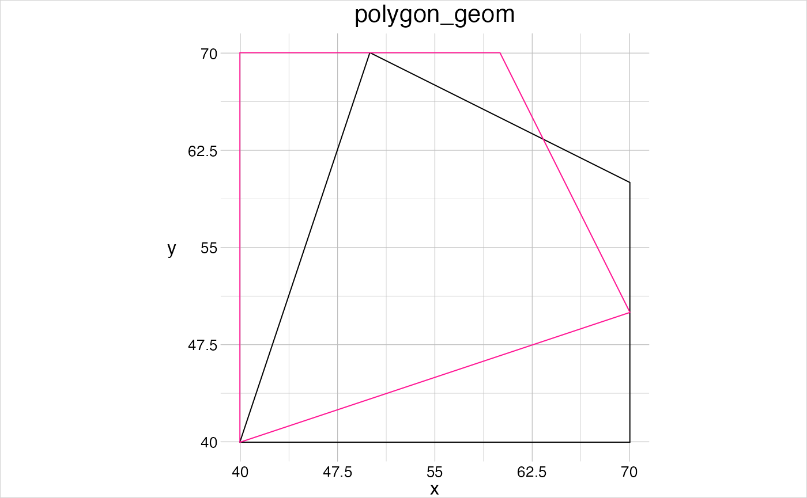
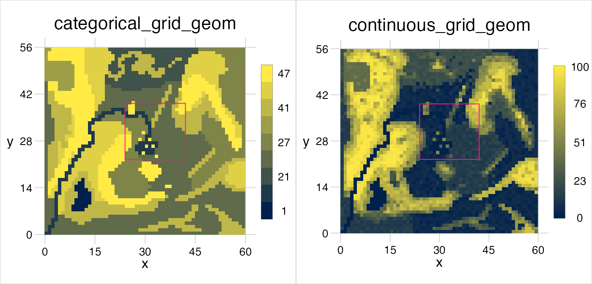
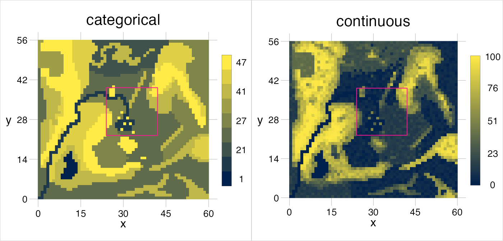
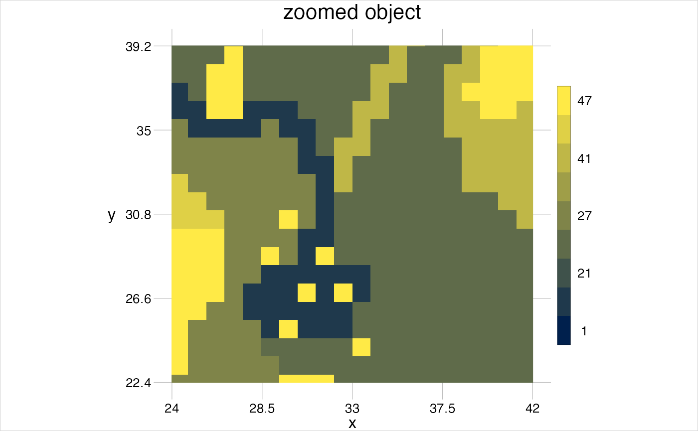
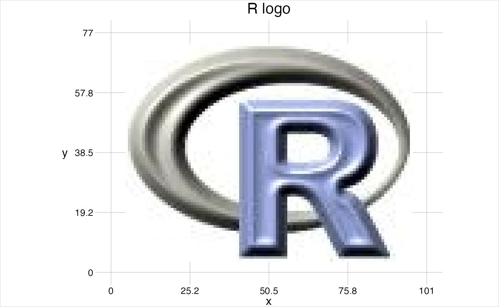
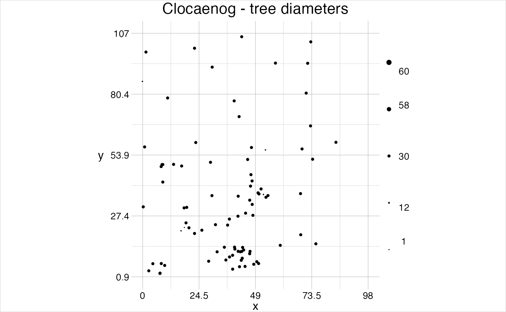
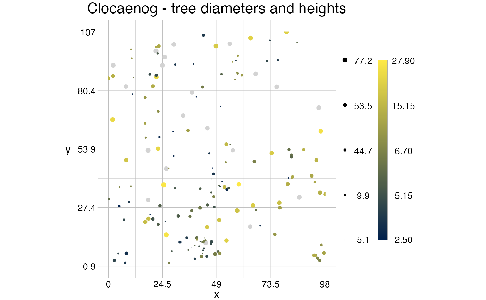
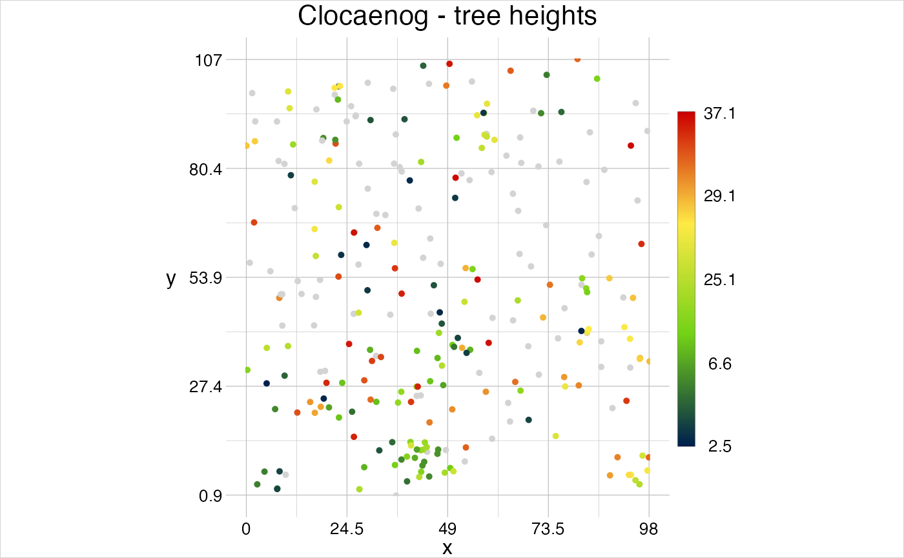

The geometr package generalises the way to interact with spatial and other geometric objects by providing functions that access and modify data components in the same manner across classes. Moreover, geometr provides a data structure (of class geom) that represents the different data components in a truly tidy manner, allowing to generate geometric objects that are easily accessible and play well with other tidy tools.
One could argue that spatial objects are merely a special case of geometric objects, where the coordinates of points refer to real locations on the surface of the earth instead of some virtual (cartesian) coordinate system. Geometric and spatial objects typically contain a collection of points that outline a geometric shape, or feature. A feature in geometr is defined as a set of points that form no more than one single unit of one of the types point, line, polygon or grid. In contrast to the simple features standard, there are no multi-* features in geometr, sets of features that belong together beyond their geometric connectedness are instead assigned a common group. Consequently, a geom is primarily made up of three tables that contain information on points (their coordinates), features and groups. The tables are related with feature and group IDs (fid and gid respectively) and can be provided with additional attributes (more on this in the chapter "Attributes of a geom").
This vignette outlines in detail first how geometr improves interoperability, then it describes the data-structure of a geom, how different feature types are cast into one another and shows how to visualise geometric objects with geometr.
Interoperable software is designed to easily exchange information with other software, which can be achieved by providing the output of functionally similar operations in a common arrangement or format, standardising access to the data. This principle is not only true for software written in different programming languages, but can also apply to several packages within the R ecosystem. R is an open source environment which means that no single package or class will ever be the sole source of a particular data structure and this is also the case for spatial and other geometric data.
Interoperable data is data that has a common arrangement and that uses the same terminology, resulting ideally in semantic interoperability. As an example, we can think of the extent of a geometric object. An extent reports the minimum and maximum value of all dimensions an object resides in. There are, however, several ways in which even this simple information can be reported, for example as vector or as table and with or without names. Moreover, distinct workflows provide data so that the same information is not at the same location or with the same name in all structures, e.g., the minimum value of the x dimension is not always the first information and is not always called ‘xmin’.
The following code chunk exemplifies this by showing various functions, which are all considered standard in R to date, that derive an extent from specific spatial objects:
nc_sf <- st_read(system.file("shape/nc.shp", package = "sf"))
#> Reading layer `nc' from data source
#> `/Users/runner/work/_temp/Library/sf/shape/nc.shp' using driver `ESRI Shapefile'
#> Simple feature collection with 100 features and 14 fields
#> Geometry type: MULTIPOLYGON
#> Dimension: XY
#> Bounding box: xmin: -84.32385 ymin: 33.88199 xmax: -75.45698 ymax: 36.58965
#> Geodetic CRS: NAD27
st_bbox(nc_sf)
#> xmin ymin xmax ymax
#> -84.32385 33.88199 -75.45698 36.58965
nc_sp <- as_Spatial(nc_sf)
bbox(nc_sp)
#> min max
#> x -84.32385 -75.45698
#> y 33.88199 36.58965
ras <- raster(system.file("external/test.grd", package = "raster"))
extent(ras)
#> class : Extent
#> xmin : 178400
#> xmax : 181600
#> ymin : 329400
#> ymax : 334000st_bbox() provides the information as a named vector and presents first minimum and then maximum values of both dimensions, bbox() provides a table with minimum and maximum values in columns and extent() provides the information in an S4 object that presents first the x and then the y values. Neither data structures, nor names or positions of the information are identical.
For a human user the structure of those information might not matter because we recognise, in most cases intuitively, where which information is to be found in such a simple data-structure. In the above case it is easy to recognise how the combination of column and rownames (of bbox()) refers to the already combined names (of st_bbox() or extent()). However, this capacity of humans to recognise information relative to the context needs to be programmed into software, for it to have that ability. Think, for example, of a new custom function that is designed to extract and process information from an arbitrary spatial input, i.e., without knowing in advance what spatial class the user will provide. This would require an extensive code-logic to handle all possible input formats, complicated further by classes that may become available only in the future.
geometr improves interoperability in R for geometric and thus spatial classes by following the Bioconductor standard for S4 classes. Here, getters and setters are used as accessor functions, and as pathway to extract or modify information of a given data structure. geometr thus provides getters that provide information in identical arrangement from a wide range of classes, and likewise setters that modify different classes in the same way, despite those classes typically need differently formatted input, arguments and functions. The following code chunk shows how different input classes yield the same output object.
myInput <- nc_sf
getExtent(x = myInput)
#> # A tibble: 2 × 2
#> x y
#> <dbl> <dbl>
#> 1 -84.3 33.9
#> 2 -75.5 36.6
myInput <- nc_sp
getExtent(x = myInput)
#> # A tibble: 2 × 2
#> x y
#> <dbl> <dbl>
#> 1 -84.3 33.9
#> 2 -75.5 36.6
myInput <- ras
getExtent(x = myInput)
#> # A tibble: 2 × 2
#> x y
#> <dbl> <dbl>
#> 1 178400 329400
#> 2 181600 334000The output of the getters provided by geometr is
This ensures that the information retrieved with getters are compatible with a tidy workflow and that a custom function that processes geometric information requires merely one very simple row of code to extract those information from a potentially wide range of distinct classes.
geom
geometr comes with the S4 class geom, a geometric (spatial) class that has primarily been developed for its interoperability and easy access.
All objects of this class are structurally the same, no slots are removed or added when modifying an object and all properties are labelled with the same terms in each object of that class. This interoperability is true for objects representing point (and grid), line or polygon features, for objects that contain a single or several features and for objects that are either merely geometric or indeed spatial/geographic because they contain a coordinate reference system (crs). A geom contains, moreover, only direct information, i.e., such information that can’t be derived from other of its information, such as the extent (which is in fact only the minimum and maximum coordinates that make up the geometry).
geom
A geom contains as its backbone the three slots @point, @feature and @group. Each of those slots are a named list that contains as many tables as there are layers in the geom. The exact values stored in those tables are explained in Tab. @ref(tab:slots), along the other slots of a geom.
| slot | class | description |
|---|---|---|
type |
character |
the type of how the geom is processed and visualised. Either point, line, polygon or grid. |
point |
tibble |
the coordinates in x and y dimension and the ID of the feature the point is part of (fid). |
feature |
list of tibbles |
the feature ID (fid) and the ID of the group the feature is part of (gid). Any other attributes that are valid for each individual feature can be joined to this table. |
group |
list of tibbles |
the group ID (gid) and any attributes that are valid for an overall group. |
window |
tibble |
the coordinates of a rectangular polygon that outlines the "enclosing area" of the geom. This is not to be confused with the extent, which is the minimum and maximum values of all dimensions of the geom and which is not recorded in a slot but derived from the coordinates. |
crs |
character |
the coordinate reference system, currently in proj4 notation. In case no crs has been set, this is shown as 'cartesian'. |
history |
list |
all of the functions of geometr produce an entry in this list to document provenance. |
A geom of type grid is a special case of a point geom in that it is made up of a systematically distributed lattice of points, thereby resembling raster objects. A geom of type grid contains in the @point slot merely a table that contains the minimum and maximum value and the cell size for the x and y dimensions, while a geom of type point, line or polygon explicitly contains all the coordinates of the points that make up features. When using the getter getPoints(), this slot is “unpacked” into a form that is interoperable with the other geom types.
gtGeoms$grid$categorical@point
#> # A tibble: 3 × 2
#> x y
#> <dbl> <dbl>
#> 1 0 0
#> 2 60 56
#> 3 1 1
getPoints(x = gtGeoms$grid$categorical)
#> # A tibble: 3,360 × 3
#> x y fid
#> <dbl> <dbl> <int>
#> 1 0.5 0.5 1
#> 2 1.5 0.5 2
#> 3 2.5 0.5 3
#> 4 3.5 0.5 4
#> 5 4.5 0.5 5
#> 6 5.5 0.5 6
#> 7 6.5 0.5 7
#> 8 7.5 0.5 8
#> 9 8.5 0.5 9
#> 10 9.5 0.5 10
#> # … with 3,350 more rowsIn contrast to Raster* objects of the raster package, the values in a grid geom are run-length encoded, in case that results in a smaller object, which is often the case for rasters with categorical values.
object.size(gtRasters$categorical)
#> 30608 bytes
object.size(gtGeoms$grid$categorical)
#> 12520 bytes
visualise(gtRasters$categorical, gtGeoms$grid$categorical)
As with points, the getter getFeatures() unpacks the @feature slot into its interoperable form.
gtGeoms$grid$categorical@feature
#> # A tibble: 726 × 2
#> val len
#> <int> <int>
#> 1 31 2
#> 2 47 10
#> 3 44 7
#> 4 21 27
#> 5 27 14
#> 6 31 1
#> 7 47 11
#> 8 44 8
#> 9 21 5
#> 10 41 4
#> # … with 716 more rows
getFeatures(x = gtGeoms$grid$categorical)
#> # A tibble: 3,360 × 2
#> fid values
#> <int> <int>
#> 1 1 31
#> 2 2 31
#> 3 3 47
#> 4 4 47
#> 5 5 47
#> 6 6 47
#> 7 7 47
#> 8 8 47
#> 9 9 47
#> 10 10 47
#> # … with 3,350 more rowsFor raster objects it is intuitively clear that attributes are contained in separate tables, where unique values of the raster cells are related to attribute values. For vector objects this also seems apparent, however, when digging below the surface there are some difference in interpretation. The attribute table for vector objects is typically seen as a table that contains attributes per feature, not per group (of unique features). When storing vector data in a simple feature data structure, each feature is an actually not so simple object that can be made up of one or more points or lines, or of a wide range of nested and neighbouring polygons, such as in a MULTIPOLYGON or even a mix of all of those in a GEOMETRYCOLLECTION.
In geometr, in contrast, a feature is a single point, one sequence of points that form a line or a single polygon, i.e., only a single object of each type. Any closed path that is not fully enclosed by another closed path, or that is not part of the same line (or the same point…), is thus a distinct feature. Obviously, it must be possible to relate features to one another beyond their physical connectedness as closed path, for examples several islands that form a nation. In geometr, this connectedness is represented by a group ID (gid), which relates all features of that group to the group specific attributes in the @group slot. This has two advantages over simple features:
getGroups(x = gtGeoms$grid$categorical)
#> # A tibble: 9 × 2
#> gid cover
#> <int> <fct>
#> 1 1 lake
#> 2 11 sealed
#> 3 21 wetland
#> 4 24 arable
#> 5 27 pasture
#> 6 31 clearcut
#> 7 41 deciduous forest
#> 8 44 coniferous forest
#> 9 47 mixed forestgeom
A geom can be created simply by transforming it from another class in case a method for that class is defined (showMethods("gc_geom")), or by using one of the geometry shape functions that are labelled gs_* in geometr.
# transform from class sf
(nc_geom <- gc_geom(input = nc_sf))
#> geom polygon
#> 100 groups | 108 features | 2529 points
#> crs +proj=longlat +datum=NAD27 +no_defs
#> attributes (features) AREA, PERIMETER, CNTY_, CNTY_ID, NAME, FIPS, FIPSNO, CRESS_ID, BIR74, ...
#> tiny map 36.59
#> ◌ ○ ◌ ○
#> ○ ○ ○ ○
#> ◌ ◌ ○ ◌
#> -84.32 ◌ ◌ ◌ ◌ -75.46
#> 33.88
# make "by hand"
coords <- tibble(x = c(40, 70, 70, 50),
y = c(40, 40, 60, 70))
(somePoints <- gs_point(anchor = coords))
#> geom point
#> 1 group | 4 features | 4 points
#> crs cartesian
#> attributes --
#> tiny map 70
#> ◌ ◎ ◌ ◌
#> ◌ ◌ ◌ ◎
#> ◌ ◌ ◌ ◌
#> 40 ◎ ◌ ◌ ◎ 70
#> 40nc_geom is made up of 100 groups with 108 individual polygon features (with 2529 points), has a crs other than cartesian and a set of (feature) attributes. The attributes values are not shown by the print method of a geom for compact visualisation of the important information. Instead, there is a "tiny map" that shows where the points of the respective geom are concentrated. If there is less than 1/16th of all points in a section of the map, a ◌ is shown, for more than 1/16th but less than 1/8th this is ○, for more than 1/8th but less than 1/4th ◎ and for sections with more than 1/4th of points, this is ◉.
A polygon is by definition a two-dimensional plane, in contrast to a line that has only one dimension, its length, and a point, which is dimensionless. A polygon and a line can be made up of the same set of points and a polygon is indeed nothing more than a sequence of lines (a path) that outlines the shape of the polygon. To then distinguish a line and polygon with the same points, it can be defined that a polygon must have duplicate start and end points, which would constitute a closed path.
(aPoly <- gs_polygon(anchor = coords))
#> geom polygon
#> 1 group | 1 feature | 5 points
#> crs cartesian
#> attributes --
#> tiny map 70
#> ◌ ◎ ◌ ◌
#> ◌ ◌ ◌ ◎
#> ◌ ◌ ◌ ◌
#> 40 ◉ ◌ ◌ ◎ 70
#> 40aPoly is made up of one feature with 5 points, has a cartesian coordinate system and the tiny map implies that the point at location (40|40) is duplicated. As a matter of fact, any geom that has no crs assigned is assumed to be a mere geometric object of which the values are valid in a cartesian coordinate system. The function gs_polygon() ensures that a polygon fulfills the formal criteria of a polygon, and thus also reconstructs duplicate points that would close individual paths.
Moreover, polygons may have holes (and islands therein), for example a park with a pond that has a little island in the middle. When defining polygon geoms with nested closed paths (holes), the only thing to consider is that the outer path must be given as first ring and that this outer ring must fully enclose all interior rings. All paths that are supposed to be nested within this path must themselves be closed, but their order does not matter. Also, when building a polygon with hole in geometr, the rotation direction described by the sequence of the points does not matter, in contrast to other spatial classes to date. mention here that this is a requirement of algorithms that are generally used, even though they are outdated…) The correct treatment and visualisation of polygons with interior rings is determined by the code-logic of the functions processing polygons.
pond <- tibble(x = c(30, 30, 80, 80, 30),
y = c(30, 80, 80, 30, 30),
fid = 1)
island <- tibble(x = c(60, 65, 65, 60, 60),
y = c(45, 45, 50, 50, 45),
fid = 1)
temp <- bind_rows(pond, island, getPoints(aPoly))
(perforatedPoly <- gs_polygon(anchor = temp))
#> geom polygon
#> 1 group | 1 feature | 15 points
#> crs cartesian
#> attributes --
#> tiny map 80
#> ○ ○ ◌ ○
#> ◌ ◌ ◌ ○
#> ◌ ◌ ◉ ◌
#> 30 ◉ ◌ ◌ ◎ 80
#> 30
visualise(perforatedPoly, fillcol = "fid")
geom
nc_sf consists of 100 “MULTIPOLYGONS” of which in fact only a small number are composed of several polygons. This is due the definition of simple features, where one “simple” feature can be of a multi* type that comprises several closed paths in the same object and which would thus be called MULTIPOLYGON. Yet, an object can also contain only a single closed path and still have the feature type MULTIPOLYGON. In a geom, multi*-features are broken down into their distinct closed paths, into "simpler features", so to speak.
By default, the attributes related to each simple feature are also stored in the @feature slot in a geom, with duplicated entries for all "simpler features" that are part of the same simple feature (for instance, features four, five and six in nc_geom). This may not be desired, for the sake of consistency, so gc_geom has the argument group = FALSE/TRUE to set whether simple feature attributes shall be regarded as group attributes in the resulting geom.
new_geom <- gc_geom(input = nc_sf, group = TRUE)
getFeatures(x = new_geom)
#> # A tibble: 108 × 2
#> fid gid
#> <int> <int>
#> 1 1 1
#> 2 2 2
#> 3 3 3
#> 4 4 4
#> 5 5 4
#> 6 6 4
#> 7 7 5
#> 8 8 6
#> 9 9 7
#> 10 10 8
#> # … with 98 more rows
getGroups(x = new_geom)
#> # A tibble: 100 × 15
#> gid AREA PERIMETER CNTY_ CNTY_ID NAME FIPS FIPSNO CRESS_ID BIR74 SID74
#> <int> <dbl> <dbl> <dbl> <dbl> <chr> <chr> <dbl> <int> <dbl> <dbl>
#> 1 1 0.114 1.44 1825 1825 Ashe 37009 37009 5 1091 1
#> 2 2 0.061 1.23 1827 1827 Allegh… 37005 37005 3 487 0
#> 3 3 0.143 1.63 1828 1828 Surry 37171 37171 86 3188 5
#> 4 4 0.07 2.97 1831 1831 Currit… 37053 37053 27 508 1
#> 5 5 0.153 2.21 1832 1832 Northa… 37131 37131 66 1421 9
#> 6 6 0.097 1.67 1833 1833 Hertfo… 37091 37091 46 1452 7
#> 7 7 0.062 1.55 1834 1834 Camden 37029 37029 15 286 0
#> 8 8 0.091 1.28 1835 1835 Gates 37073 37073 37 420 0
#> 9 9 0.118 1.42 1836 1836 Warren 37185 37185 93 968 4
#> 10 10 0.124 1.43 1837 1837 Stokes 37169 37169 85 1612 1
#> # … with 90 more rows, and 4 more variables: NWBIR74 <dbl>, BIR79 <dbl>,
#> # SID79 <dbl>, NWBIR79 <dbl>It becomes clear that this approach to attribute tables makes the class geom quite flexible. One could for example assign some point specific measurements (such as Arne Pommerening’s Clocaenog 6 sample data) to the feature attribute table, and at the same time set group specific attributes to the group attribute table of a point geom.
clg_dat <- clocaenog$trees
clg_spec <- clocaenog$species
# make table of locations, tree properties and species metadata
locations <- tibble(x = clg_dat$x,
y = clg_dat$y,
fid = clg_dat$Number)
prop <- tibble(fid = clg_dat$Number,
gid = clg_dat$Species,
dbh = clg_dat$dbh,
height = clg_dat$ht)
species <- tibble(gid = unique(clg_dat$Species)) %>%
left_join(clg_spec, by = c("gid" = "NC")) %>%
select(gid, name = CN, scientific = BN) %>%
mutate(deciduous = c(T, T, F, F, F, T, T, F, T, T, F)) %>%
arrange(gid)
# set these as attribute tables and select only trees with a height value
trees <- locations %>%
gs_point(anchor = .) %>%
setFeatures(table = prop) %>%
setGroups(table = species)
# make the title
validpoints <- getPoints(x = trees)
title <- paste0("Clocaenog - tree heights (", dim(validpoints)[1], ")")
# and visualise
visualise(!!title := trees, linecol = "height")
An object of class geom contains, just like a raster the slot @history. This slot documents the provenance of that object, i.e., where it came from and how it has been modified. The function gc_geom(), all gs_*() and all gt_()* functions attach information to the list the @history slot is. In case you want to make use of this slot, it can be set via setHistory().
visualise(aPoly)
reflPoly <- gt_reflect(obj = aPoly, angle = 45)
visualise(reflPoly, linecol = "deeppink", new = FALSE, trace = TRUE)
#> the variable 'deeppink' is not available in this object.
#> this object has the following history:
#> -> object was created as 'polygon' geom.
#> -> geom was reflected.It is quite straightforward to cast from one feature type to another with geometr. As already mentioned above, the feature types point, line and polygon have the same arrangement and differ only in the slot @type. This means that the only element that needs to be changed is the feature type. All gs_*() functions contain the argument anchor =, this is where location information for creating the output are provided. If what is provided here is already a geom, most of the location information and other properties can be (and in fact are) simply copied into the new object.
The following code chunk shows casting in geometr. When casting to polygons, vertex checks are carried out that make sure the output is a valid polygon. This results, as also described above, in the first/last point becoming duplicated to form a closed path. When casting from a polygon to another type, those duplicates have to be handled, for example by removing duplicates.
# make points and discard duplicates ...
(somePoints <- gs_point(anchor = aPoly))
#> geom point
#> 1 group | 4 features | 4 points
#> crs cartesian
#> attributes --
#> tiny map 70
#> ◌ ◎ ◌ ◌
#> ◌ ◌ ◌ ◎
#> ◌ ◌ ◌ ◌
#> 40 ◎ ◌ ◌ ◎ 70
#> 40
# ... and recreate a polygon from that
(aPoly <- gs_polygon(anchor = somePoints))
#> geom polygon
#> 1 group | 1 feature | 5 points
#> crs cartesian
#> attributes --
#> tiny map 70
#> ◌ ◎ ◌ ◌
#> ◌ ◌ ◌ ◎
#> ◌ ◌ ◌ ◌
#> 40 ◉ ◌ ◌ ◎ 70
#> 40We saw already some quite powerful use-cases of the visualise() function that comes with geometr. The philosophy of plotting geometric objects in geometr deviates a bit from other approaches.
The idea is that both vector and raster objects can be visualised at the same time, and that additional options can be specified for their appearance, and for the appearance of other plot elements (such as the legend, the box or the axes). In case several objects are provided to visualise() at the same time, they are facetted, i.e., plotted in separate panels next to one another. Moreover, it is possible to set the plot title by providing a name to the object that shall be plotted, for example via 'plot name' = plotObject. In case a title is not provided in that way, the title is either extracted from the object name (for example, the raster in the following example is part of a RasterStack with the name continuous) or a default value is used.
visualise('I made a polygon!' = aPoly, gtRasters$continuous)
In case a geom is provided with a relative scale, the values are scaled between 0 and 1 and it is plotted by default relative to the plot extent. This allows, for example, to observe always the same region in a set of images, in which some signal changes, and eventually to extract the values. To this end, a geom would be provided with a reference window from which the relative values shall be derived and its’ coordinates are scaled to those values.
relPoly <- gs_rectangle(anchor = aPoly) %>%
setWindow(to = tibble(x = c(0, 100), y = c(0, 100)))
visualise(gtRasters$categorical, gtRasters$continuous)
visualise(relPoly, linecol = "deeppink", new = FALSE)
#> the variable 'deeppink' is not available in this object.
#> the variable 'deeppink' is not available in this object.
In various functions of geometr the reference window can play a role, most prominently to control which part of an object is plotted. The window of any object that has been plotted here so far, other than relPoly, has been set implicitly, usually to the extent of that object. relPoly has been assigned with a reference window that is larger than its’ extent and this lead to an effect that could be described zooming out. Likewise, one could zoom in by assigning a reference window smaller than the extent of an object. The reference region for a plot can be set via the window = argument in visualise(), which requires absolute values. To zoom in on relPoly, we thus have to assign the plot extent as window to relPoly and rescale the relative values to absolute values on that basis.
zoom <- gt_scale(obj = relPoly, range = getExtent(x = gtRasters$categorical)) %>%
setWindow(to = getExtent(x = gtRasters$categorical))
visualise('zoomed object' = gtRasters$categorical, window = getExtent(x = zoom))
visualise() also allows to plot images, simply by providing an object that has the three layers red, green and blue and setting image = TRUE.
R_logo <- brick(system.file("external/rlogo.grd", package = "raster"))
visualise('R logo' = gc_geom(input = R_logo, as_hex = TRUE))
gtTheme
To adjust the appearance of a plot one can either provide a theme for all plot elements or quick options for the plotted objects only.
The theme controls how plots that are created with visualise() appear. By default, this theme is gtTheme and it has the following properties.
gtTheme
#> ✔ title in black with fontsize 16
#> ✔ box in grey with 0.6 wide lines of type solid
#> ✔ xAxis with 4 bins and a margin of 5%
#> ✔ - label x in black with fontsize 12
#> ✔ - ticks in black with fontsize 10 rounded to 1 digit
#> ✔ yAxis with 4 bins and a margin of 5%
#> ✔ - label y in black with fontsize 12
#> ✔ - ticks in black with fontsize 10 rounded to 1 digit
#> ✔ grid in grey with 0.6 wide lines of type solid
#> ✔ legend with values ordered ascending in 4 bins and a relative height of 0.6
#> ✔ - label in black with fontsize 10 rounded to 2 digits
#> ✔ - box in black with 0.2 wide lines of type solid
#> ✔ objects with line-colour black and fill-colour empty
#> with 1 wide lines of type solid
#> or 0.5 wide points of type 20A new theme can be created by modifying any of the elements (shown in yellow in the console), via the function setTheme(). vector and raster are provided with a scale, where it is noted that one of the properties is scaled to one of the attributes of the object. By default, the line colour (linecol) is scaled to the feature ID (fid) for vector objects and rasters are scaled to their unique values, or the ID of an optional attribute table. For vector objects also other properties can be scaled, namely the point symbol (pointsymbol) and size (pointsize), the colour of points (also linecol), the line type (linetype) and width (linewidth) of lines and polygons and the fill colour of polygons (fillcol).
By default gtTheme contains only a single value for most properties (except colours), so when scaling a property, a sensible range needs to be specified. For example, to make a plot where each point represents the diameter of a tree, it would make sense to scale the points between values that resemble the tree diameter.
treeTheme <- setTheme(scale = list(param = "pointsize", to = "dbh"),
parameters = list(pointsize = c(0.05, 0.77)))
visualise(`Clocaenog - tree diameters` = trees, theme = treeTheme, clip = FALSE)
Alternatively, one could use quick options to set scaling, by providing the property to scale and the attribute to scale to as property = attribute, also for several properties at the same time.
treeTheme <- setTheme(parameters = list(pointsize = c(0.05, 0.77)))
visualise(`Clocaenog - tree diameters and heights` = trees, theme = treeTheme,
pointsize = "dbh", linecol = "height")
Colour palettes can be set by providing “waypoints” between which colours should be interpolated (see the documentation of colorRamp). By default, these are a darkish blue (#00204D) for low values and yellow (#FFEA46) for high values. When including additional values, or when building totally new palettes, the colour can be modified accordingly.
treeTheme <- setTheme(parameters = list(colours = c("#00204DFF", "#73D216FF",
"#FFEA46FF", "#CC0000F0")))
visualise(`Clocaenog - tree heights` = trees, theme = treeTheme, linecol = "height")